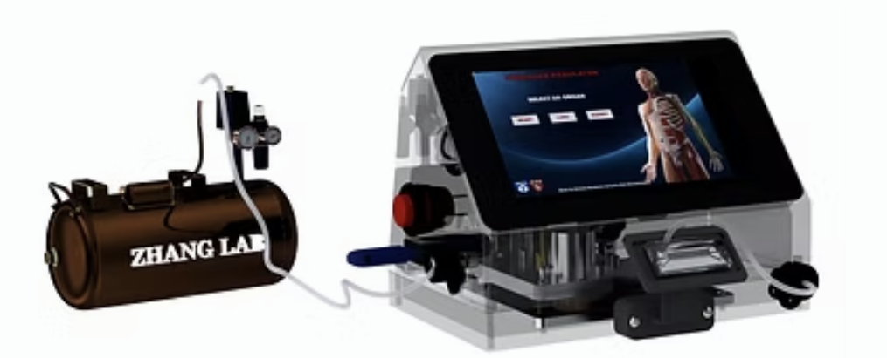

Pressure Regulator for Organ-On-a-Chip
Date: 2021
The pressure regulator is a cost-effective device designed to modulate and mimic an organ's given pressure signal, provided by a USB image graph, onto an organ-on-a-chip(OOAC) platform. Combining the pressure regulator with an OOAC forms a comprehensive system that seeks to replace traditional animal testing procedures with more effective and ethical in vitro models.
The design was based on three main factors:
- Cost-effectiveness: The common pressure regulators on the market cost around 1000USD or higher, compared to the one developed at the laboratory which cost around 300USD. The material utilized for the structure was PLA and the rest of the components were purchased from different electronic websites.
- Precision and accuracy: In order to ensure the precision and accuracy of the system, a key consideration was the design of the structure itself. This involved taking into account the number of inlets and outlets required by the microfluidic system inside the organ-on-a-chip platform and the material used in the structure's construction, tolerances, and accommodation for external components. To develop the model, Solidworks was used, and each render was made using Visualize Content. In addition, Geometric Dimensioning and Tolerancing (GD&T) was applied to all drawings to improve quality and avoid errors when manufacturing. The overall design consisted of both external and internal parts. The external component was the outer case, which housed the display and the organ-on-a-chip platform (Figure 1). This structure was 3D printed using PLA on an Ender 3. The internal component, on the other hand, was composed of proportional solenoid valves with their respective 3D printed holders, air tubes, a PCB with screw fixing supports, and a pressure sensor (Figure 2). The organ-on-a-chip platform, made of PDMS, features specific orifices, including two dedicated to the valves and one for medium circulation. These features were carefully considered in the design process to ensure optimal functionality and performance of the overall system.
-
Onboard Systems:
The mechanical design of the CubeSat structure was made in Solidworks. The experimental set-up had 3 chambers (Figure 3) with four arrays each. Each array had pressure, humidity, CO2, and temperature sensors.
The payload structure was specifically designed to function effectively within a pressurized environment. The selection of materials was determined through the utilization of the GRANTA methodology, which encompasses four key pillars: objective, free variables, constraints, and function. Within this framework, the free variables were defined as the material and thickness of the structural components, while the constraints were based on the payload weight and volume. After a thorough evaluation, the Edupack software identified Aluminum 6061 T6 as the most suitable material for the payload structure. This decision was based on the software’s calculations that showed a graph of the slope between various densities and yield strengths of different materials (Figure 5) and a final function pointing out to Aluminum 6061 T6. Other several critical factors that further the selection of the material include its exceptional resistance to corrosion, outstanding strength-to-weight ratio, lightness, and machinability.

In terms of the design, a majority of the structural components exhibit a safety factor exceeding 2. This indicates that each element of the payload is capable of withstanding the rigorous conditions of space, as well as external loads, without encountering any significant risk of damage or necessitating further redesign. Moreover, the chassis design of the payload was developed utilizing the strength distribution theory, which guided the selection of an isogrid pattern on the payload walls (Figure 6). This pattern was specifically chosen to minimize stress points and to reduce overall weight.

Finally, stress concentration simulations were made. Considering the results, the team concluded that the maximum stress suffered by the components of the payload during launch will be approximately 1.33MPa. And the deformations will not exceed 1.687x10-3mm.
 ← Back to Research
← Back to Research